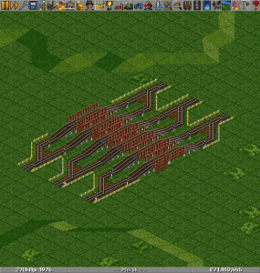

Back to the Basics (Signals How,What,When and even Where)
Signals All We Need To Know
![[Signals]](https://web.archive.org/web/2/http://blog.openttdcoop.org/files/pictures/Chris Booth/Fort%20Trunworth%20Transport%2C%207th%20Dec%201950.png){kind=link}
Signals are what all rail networks need to be able to run. Yet quite a lot of the time I visit the public server and I spend most of my time finding missing or wrongly used signals. I finaly thought that to help remove some of the confusion around signaling and how easy it really is. I would write this blog to share the wealth.
CTRL Is Your Friend, but don’t abuse your friends
CTRL is your friend. When placing signals over a long distance hold down your ctrl key and drag the signals. The game will then lay signals the length of that track untill it has an intersection. This mean that signals will be placed automatically around curves so we don’t have to 🙂 ,but we do need to remeber to add signals to the first and last blocks to make sure all gaps are 1 tile or less.

PBS(Path Based Signals) Vs Pre Signals
This is a topic that comes up all the time in chat, where should I use PBS and where should I use Pre-Signals. A general rule of thumb save PBS for splits and areas where it is hard or impossible to place a signal within the standard coop rules of 1 tile. PBS may save you signals and tiles, but it is not as flexible or as fast as a block signal. This mean you realy should try to not use them on the main lines unless you realy have to.
Bridges, Tunnels and Larger gaps.


Lets evaluate the image above, which signals should we use?
The Pre siganls stop trains blocking the bridge entrance, but can increase singal gap on a fully loaded line. (Best at station entrance or in hubs)
The normal block will work fine on a free flowing line, but will block if we have any waiting trains, this makes them not ideal for hubs or stations where we can have stoping trains. On the other hand they are fine for crossing rivers of other lines in normal ML traffic.
The PBS option should only be used if you do not have space for the first two options, and need to save your self one tile. This is due to the fact that PBS is to slow under heavy usage, and it also increase the signal gap compared to the other options.
When using bridges, tunnel or gaps in signals you should always make sure that your first gap is the biggest gap. This will help prevent the gap or Crossing becoming a buffer for trains.

In the above image we have 2 sets of bridges. The first set has a small gap first while the second has equal gaps for the full length of the crossing. This means the second is much less likely to buffer trains than the first. This rule should also be used when balancing, mixing or spliting lines.
Priors

Above are 3 differnt sorts of priors. None of them are wrong, but some are better that others. This does not mean to say you can’t combine 2 or even all 3 types of priors to make the best prior for you. the PBS prior at the bottom gives priority to the ML by giving the entering line a block signal, which is show a red signal when a train on the ML is inside the Prior. The Pre Signal Prior is similar to this but uses presignals. The top prior using the 2 way presignals is no very expandable but much more compact, this mean it is ideal when used with the PBS or Pre Signal prior.
Simple yet effective Merger

The above image show a simple, expandable and effective merger modled for a train length of 3 tiles. As you can see both main lines can be accessed from the joining sideline. The side line has a waiting bay of exactly 1 Train Length. The main lines in my example have a prior of 3 tiles to the Main line. All of these can be changed to suit your train length, speed and acceleration.
Categories: Community News
mfb September 10, 2011 19:43
>> This does not mean to say you can’t combine 2 or even all 3 types of priors to make the best prior for you.
I think an example of that would be useful – many new players have problems to combine them in a correct way.
All double bridge designs have a signal gap of 1 or less. The PBS method works like a signal gap of 0, as the next train can join as soon as the previous train left the splitting tile. But it is true that it can slow down trains with more traffic.